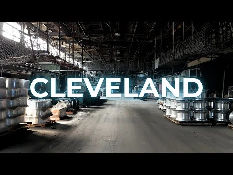
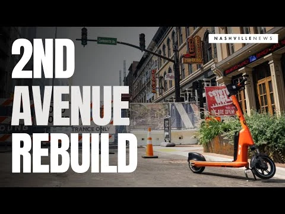

DYCE MEDIA
Documentary
Documenting the intentional moments and rituals that define the human experience.


READY WHEN YOU ARE.
OUR WORK
WATCH MORE
Documenting the intentional moments and rituals that define the human experience.

